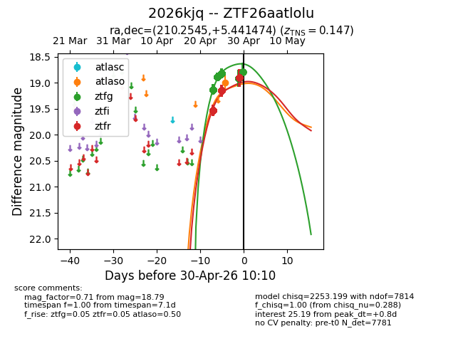
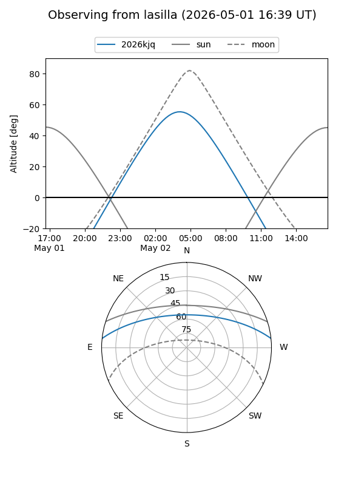
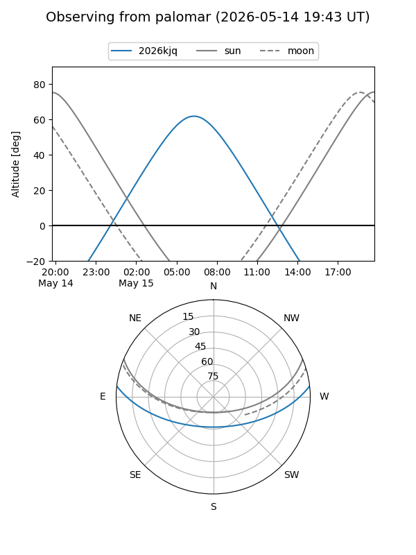
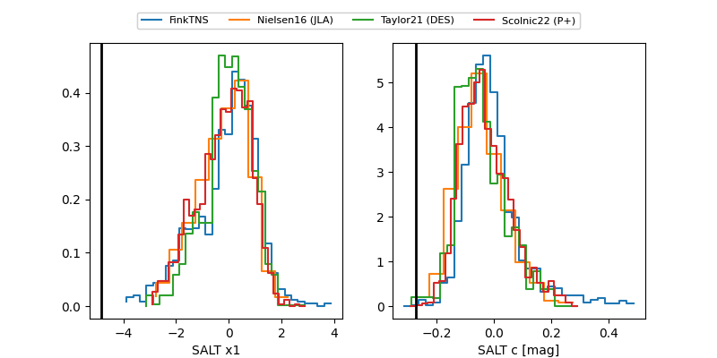

2026kjq
Target 2026kjq at 2026-04-30 10:14
Aliases and brokers:
FINK: link
Lasair: link
ALeRCE: link
TNS: link
YSE: link
alt names
ZTF26aatlolu (ztf,fink_ztf)
2026kjq (tns,yse)
Coordinates:
equatorial (ra, dec) = 210.2545,+5.44147
equatorial (HMS+DMS) = 14:01:01.09,+05:26:29.31
galactic (l, b) = (343.4064,+62.71017)
Flags:
Photometry:
last atlaso=18.99, ztfg=18.79, ztfr=18.91
1 atlaso, 4655 ztfg, 3162 ztfr detections
Lightcurve

Visibility


Additional plots
